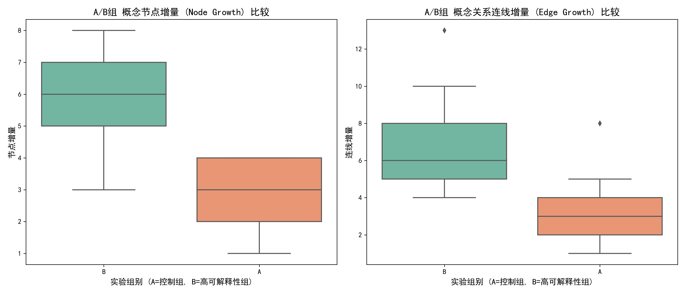

1. 理论依据与业务目的
研究假设： 生成式AI的“高可解释性”（如展示推理过程、术语解释、置信度等）能够显著降低学习者的认知负荷，促进其对复杂知识的深度理解。
业务目的： 通过A/B测试（A组为普通黑盒AI，B组为高可解释性AI），对比两组用户在学习前后的概念图（Concept Map）变化，用数据验证高可解释性UI的实际教育价值。
核心评估指标：
- 节点增量 (Node Growth) = 后测概念数量 - 前测概念数量 （反映知识广度的扩展）
- 连线增量 (Edge Growth) = 后测关系数量 - 前测关系数量 （反映知识深度的联结，是深度学习的关键标志）
2. 数据分析步骤 (AI 协同)
本次数据分析使用了 Python 的 Pandas 和 SciPy 库，并结合 AI 提示词快速生成分析代码。
步骤 2.1: 独立样本 T 检验
AI 提示词： "请使用 scipy.stats 对 A 组和 B 组的 node_growth 和 edge_growth 分别进行独立样本 t 检验。输出 t 值和 p 值..."
步骤 2.2: 数据可视化
AI 提示词： "请使用 seaborn 绘制两个箱线图，分别比较 A 组和 B 组在节点增量和连线增量上的分布差异..."
3. 可视化图表与解读

图 1: A组(控制组)与B组(高可解释性组)在概念图增量上的箱线图分布
📊 图表解读：节点增量
从左侧箱线图可以看出，B组（实验组）的节点增量中位数（约6.0）明显高于A组（约3.0）。A组的数据分布较为集中且偏低，而B组整体分布更高。
统计学意义： T检验结果 (t = -9.91, p < 0.001) 表明，这种差异具有极显著的统计学意义。
📊 图表解读：连线增量
从右侧箱线图可以看出，反映深度学习的“连线增量”指标上，B组的中位数（约7.0）同样远超A组（约3.0）。
统计学意义： T检验结果 (t = -6.35, p < 0.001) 表明，B组在构建复杂概念关系方面的能力提升显著优于A组。
4. 最终分析结论
综合以上数据分析过程，我们可以得出明确的结论：
- 高可解释性促进知识广度： 带有推理过程和术语解释的 AI（B组），帮助学习者在学习后能够回忆并列举出显著更多的专业概念（节点增量 p < 0.001）。
- 高可解释性驱动深度学习： B组学习者在构建概念间的网络关系（连线增量）上表现出压倒性优势。这表明透明的 AI 生成过程降低了认知负荷，使学生有余力去理解概念之间的深层逻辑联系，而不仅仅是死记硬背单一术语。
- 业务建议： 在未来的教育类 AI 产品设计中，应将“生成透明度”、“术语辅助理解”和“置信度评估”作为标配功能，以真正发挥 AI 作为“认知脚手架”的教育价值。